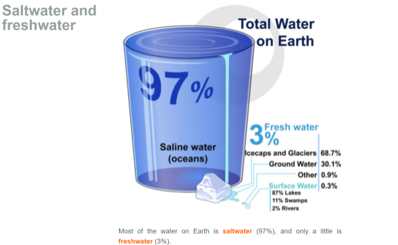

Saltwater and freshwater
Total Water on Earth
- 97% Saline water (oceans)
- 3% Fresh water
- Icecaps and Glaciers: 68.7%
- Ground Water: 30.1%
- Other: 0.9%
- Surface Water: 0.3%
- 87% Lakes
- 11% Swamps
- 2% Rivers
Most of the water on Earth is saltwater (97%), and only a little is freshwater (3%).
Image by Mariana Ruiz Villarreal (LadyofHats) for the CK-12 Foundation, CC BY-NC 3.0
Focus Questions
- List three places where freshwater is found on Earth.
- What water resources contribute to Earth’s surface water?